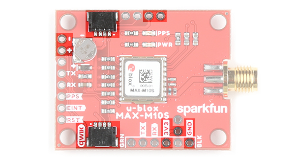

Introduction


The SparkFun u-blox MAX-M10S breakout is an ultra-low-power, high performance, miniaturized GNSS board that is perfect for battery operated applications that don't possess a lot of space, such as asset trackers and wearable devices. In this tutorial, we will quickly get you set up using the Qwiic ecosystem and Arduino so that you can start reading the output!

Required Materials
To follow along with this tutorial, you will need the following materials. You may not need everything though depending on what you have. Add it to your cart, read through the guide, and adjust the cart as necessary.
 SparkFun GNSS Receiver Breakout - MAX-M10S (Qwiic)GPS-18037 |
 GPS/GNSS Magnetic Mount Antenna - 3m (SMA)GPS-14986 |
 SparkFun RedBoard PlusDEV-18158 |
 Qwiic Cable - 50mmPRT-14426 |
 Reversible USB A to C Cable - 2mCAB-15424 |
Additional GPS Antenna Options
Below are some other GPS antenna options.
 GPS/GNSS Embedded Antenna - 1m (SMA)GPS-14987 |
 GPS Embedded Antenna SMAGPS-00177 |
Suggested Reading
If you aren't familiar with the Qwiic system, we recommend reading here for an overview.

If you aren’t familiar with the following concepts, we also recommend checking out a few of these tutorials before continuing.
 GPS Basics |
 I2C |
 Serial Basic Hookup Guide |
 RedBoard Hookup Guide |
Hardware Overview
We've broken out the u-blox MAX-M10S module to a breakout. This section highlights the relevant features of the board. For more information about the IC, check out the Resources and Going Further.
{kind=link}
Power
Power for this board should be 3.3V. There is a 3.3V pin on the PTH header along the side of the board, but you can also provide power through the Qwiic connector.
|  | |
| Top View | Bottom View |
{kind=link}
{kind=link}
Communication Ports
Note
The MAX-M10S differs from other modules as it only has I2C and UART. It is important to note that the board does not have SPI pins.

Qwiic and I2C (a.k.a. DDC)
There are two PTHs labeled SDA and SCL which indicates the I2C data lines. Similarly, you can just use the Qwiic connector to provide power and connect to the I2C pins. The Qwiic ecosystem is made for fast prototyping by removing the need for soldering. All you need to do is plug a Qwiic cable into the Qwiic connector and voila!
| Top View | Bottom View |
{kind=link}
{kind=link}
Note
The only I2C address for this and all u-Blox GPS products is 0x42, though each can have their address changed through software.
UART
For users that prefer to communicate over UART, we made sure to configure the UART pin grouping to an industry standard to ensure that it easily connects to a Serial Basic. Extra UART pins are also broken out on another edge of the board as well. The port is set to 38400 baud as the default.
| Top View | Bottom View |
{kind=link}
{kind=link}
Control Pins
These pins are used for various extra control of the MAX-M10S. The control pins are highlighted below.
| Top View | Bottom View |
{kind=link}
{kind=link}
- PPS: Pulse-per-second output pin. Begins blinking at 1Hz when module gets basic GPS/GNSS position lock.
- RST: Reset input pin. Pull this line low to reset the module.
- SAFE: Safeboot input pin. This is required for firmware updates to the module and generally should not be used or connected. To save on space, the silkscreen is labeled on the bottom of the board.
- EINT: Interrupt input/output pin. Can be configured using U-Center to bring the module out of deep sleep or to output an interrupt for various module states.
SMA Connector for Antenna
The board is populated with an SMA connector for a secure connection to a patch antenna.
{kind=link}
LEDs
The board includes two status LEDs as indicated in the image below.
{kind=link}
- PPS: The pulse per second LED will illuminate each second once a position lock has been achieved.
- PWR: The power LED will illuminate when 3.3V is provided either over the Qwiic bus or any of the 3.3V PTH pins.
Jumpers
There are four jumpers on the back of the board. For more information, check out our tutorial on working with jumper pads and PCB traces should you decide to cut the traces with a hobby knife.
{kind=link}
- PWR: This is connected to the PWR LED on the top of the board. Cutting this disables the LED.
- MEAS: Short for current measurement. By default, the MEAs is closed. Cutting the jumper and soldering to the PTH pads will allows you to insert a current meter and precisely monitor the how much current your application is consuming.
- PPS: This is connected to the PPS LED on the top of the board. Cutting this disables the LED.
- I2C: The I2C jumpers are open by default. By adding solder to the jumpers, it will connect to the 2.2kΩ pull-up resistors for the I2C bus. Most of the time you can leave these alone unless your project requires you to connect the pull-up resistors.
Backup Battery
The MS621FE rechargeable battery maintains the battery backed RAM (BBR) on the GNSS module. This allows for much faster position locks (a.k.a. hot start). The BBR is also used for module configuration retention. The battery is automatically trickle charged when power is applied and should maintain settings and GNSS orbit data for up to two weeks without power.
{kind=link}
Board Dimensions
The overall length and width with the antenna connector is about 1.74" x 1.20". There are four mounting holes by each corner of the board.

Hardware Assembly
At a minimum, you will need to attach an external antenna to the MAX-M10S, supply 3.3V power, and connect to one of the board's peripherals.
Attaching an External Antenna
Plug in one of our patch antennas with SMA connector to the GPS board. Secure the connection using the hex nut until it is finger-tight.

I2C
One method to communicate with the MAX-M10S is through I2C. The Qwiic connect system makes it quick and easy to connect the board to your system using a polarized cable. For embedded projects, you can use a Qwiic-enabled Arduino development board like the RedBoard Plus and its associated USB cable. Then plug a Qwiic cable between the RedBoard Plus and the SparkFun MAX-M10S.

Note
The RedBoard Plus includes a switch to adjust the logic levels to either 5V or 3.3V. It does not matter what side the switch is on for this setup to communicate with the MAX-M10S since there are logic level converters included before the Qwiic connector.
If you're going to be soldering to the through hole pins for I2C functionality, then just attach the following lines between your chosen microcontroller's I2C and the MAX-M10S:
- SDA to SDA
- SCL to SCL
- 3.3V to 3.3V
- GND to GND
UART
A second method to communicate with the MAX-M10S is through its serial UART. You can directly connect the GPS to the computer by connecting a USB-to-serial converter to the industry standard serial connection (aka the 'FTDI' pinout). In this case, we used an FTDI but you can use another USB-to-serial converter like the CH340. Just make sure to match the silkscreen (GRN to GRN and BLK to BLK). For a secure connection, you'll need to solder male header pins or wires to the MAX-M10S.

You could also connect the pins to a microcontroller like the RedBoard Plus as long as the switch for the logic levels are flipped to the 3.3V side before powering the board up. You'll need to do a little bit more work as opposed to using Qwiic connect system. You'll need to attach the following lines between your chosen microcontroller's UART and the MAX-M10S:
- Tx to Rx
- Rx to Tx
- 3.3V to 3.3V
- GND to GND
Software Setup and Programming
Note
This example assumes you are using the latest version of the Arduino IDE on your desktop. If this is your first time using Arduino, please review our tutorial on installing the Arduino IDE. If you have not previously installed an Arduino library, please check out our installation guide.
If you've never connected an FTDI or CH340 to your computer before, you may need to install drivers for the USB-to-serial converter. Check out our How to Install FTDI Drivers or How to Install CH340 Drivers tutorial for help with the installation.
All of our u-blox based GPS boards share the same library: this board, their predeccesors and the higher precision u-blox cousins. The SparkFun u-blox Arduino library can be downloaded with the Arduino library manager by searching 'SparkFun u-blox GNSS' or you can grab the zip here from the GitHub repository to manually install:
There are several example sketches provided that utilize the I2C bus to get you up and receiving messages from space. We'll go over one of the examples in this tutorial.
Note
Example 2 uses the 'MicroNMEA' library by Steve Marple. Make sure to install the library as well by searching for it in the Arduino library manager. You could also grab the zip here from the GitHub repository to manually install.
Example Code
We're just going to look at example two (i.e. "Example2_NMEAParsing.ino") which in my opinion, makes it clear the awesomeness of these GPS receivers. That is to say, talking to satellites and finding out where in the world you are.
#include <Wire.h> //Needed for I2C to GPS
#include "SparkFun_u-blox_GNSS_Arduino_Library.h" //Click here to get the library: http://librarymanager/All#SparkFun_u-blox_GNSS
SFE_UBLOX_GNSS myGNSS;
void setup()
{
Serial.begin(115200);
Serial.println("SparkFun u-blox Example");
Wire.begin();
if (myGNSS.begin() == false)
{
Serial.println(F("u-blox GNSS module not detected at default I2C address. Please check wiring. Freezing."));
while (1);
}
//This will pipe all NMEA sentences to the serial port so we can see them
myGNSS.setNMEAOutputPort(Serial);
}
void loop()
{
myGNSS.checkUblox(); //See if new data is available. Process bytes as they come in.
delay(250); //Don't pound too hard on the I2C bus
When you upload this code you'll have to wait ~24s to get a lock onto any satellites. After that first lock, the backup battery on the board will provide power to some internal systems that will allow for a hot start the next time you turn on the board. The hot start only lasts four hours, but allows you to get a lock within one second. After you get a lock the serial terminal will start listing longitude and latitude coordinates, as seen below. Make sure to set the serial monitor to 115200 baud.

These are the coordinates for SparkFun HQ
Troubleshooting Tips
Note
Not working as expected and need help?
If you need technical assistance and more information on a product that is not working as you expected, we recommend heading on over to the SparkFun Technical Assistance page for some initial troubleshooting.
If you don't find what you need there, the SparkFun Forums are a great place to find and ask for help. If this is your first visit, you'll need to create a Forum Account to search product forums and post questions.
Resources:
Now that you've successfully got your MAX-M10S up and running, it's time to incorporate it into your own project! For more information, check out the resources below:
- Schematic (PDF)
- Eagle (ZIP)
- Board Dimensions (PNG)
- Datasheet (PDF)
- Protocol Manual (PDF)
- Integration Manual (PDF)
- Product Summary (PDF)
- Release Notes (PDF)
- u-blox ECCN (PDF)
- Arduino Library
- GitHub Hardware Repo
- SFE Product Showcase
Or check out other tutorials related to GPS and GNSS:
 SparkFun RTK L-Band Hookup Guide |
 Getting Started with U-Center for u-blox |
 GPS-RTK2 Hookup Guide |
 SparkFun GPS Breakout (ZOE-M8Q and SAM-M8Q) Hookup Guide |